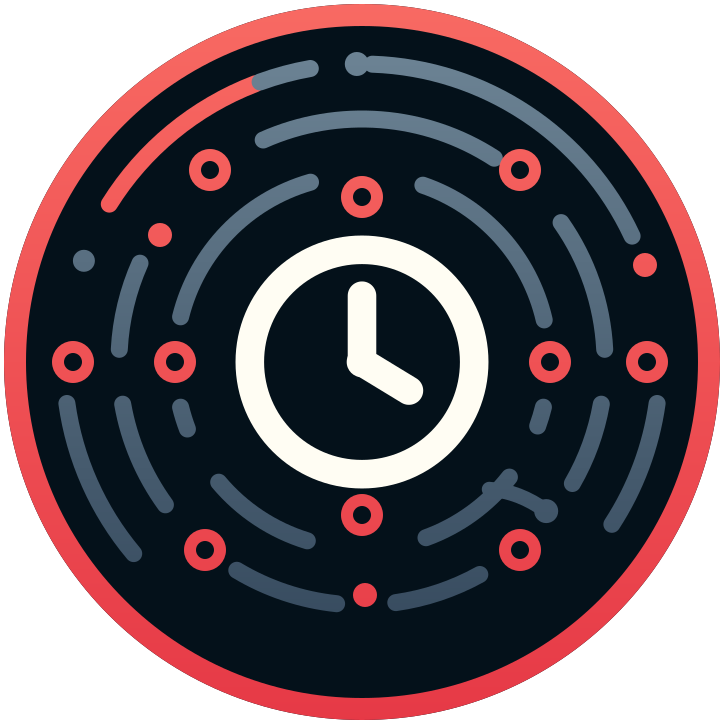
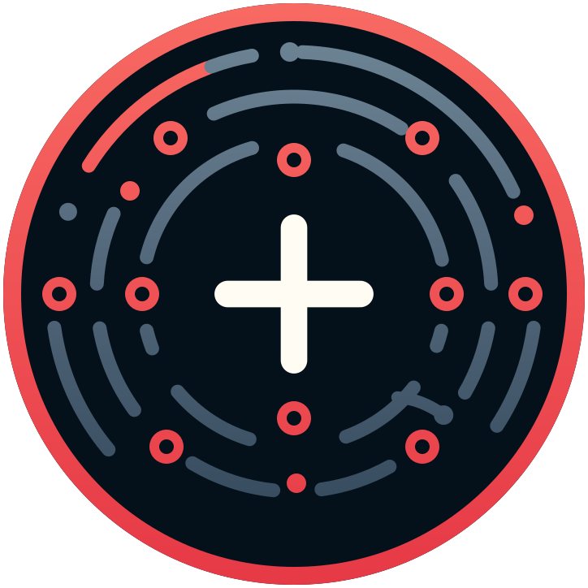

Ferramentas simples para o dia a dia de trabalho. Entre com seu e-mail e senha para acessar.

in_clock 🔒
Sem acesso — fale com o administrador Cronômetro de tarefas (categoria e quantidade), ponto com banco de horas e exportação para .xlsx/CSV.Processos 🔒
Sem acesso — fale com o administrador Acompanhamento pessoal de processos: documentos baixados do tribunal, última publicação e em qual documento cada processo está.